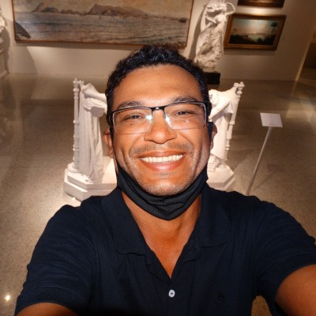

Hey, I'm Alex!
I'm Brazilian, born in Rio de Janeiro but currently living in Foz do Iguaçu-PR.
Passionate about technology and education. I believe education has the power to change the world.
I have a degree in Big Data and Analytical Intelligence, among many other things.
Soft Skills
- Goal Oriented
- Logical Thinking
- Ability to work independent
- Building and managing expectations
- Ongoing Improvement
- Negotiation
- Determination
- Attention to detail
Hard Skills
- Programming Logic and Algorithms with Python
- Knowledge in Machine Learning and Artificial Intelligence
- Knowledge in Linux
- Knowledge in Networks
- learning Javascript, CSS and HTML
Languages
- English - Intermediate
- Spanish - Intermediate
That's my favorite Blogger about technology.
Click Here to Open Web Page
If you wanna find a very nice guy, please, click here!!!